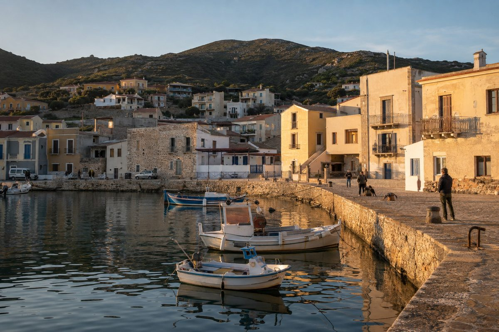
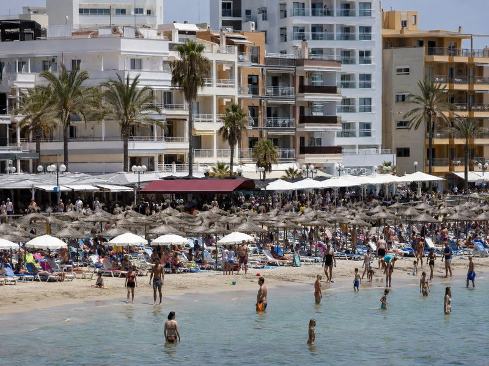
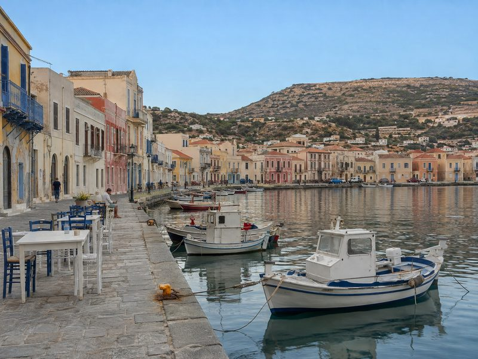
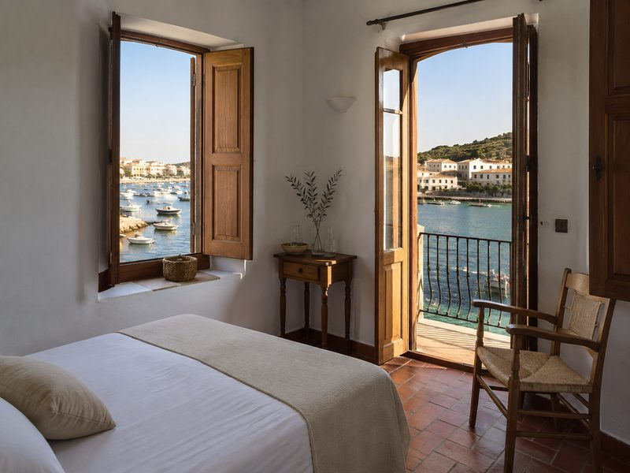
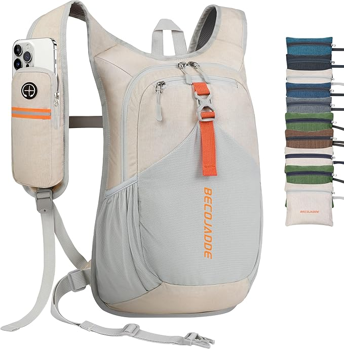

The Quiet Coastal Town Is Usually One Stop Past The Famous One
The famous coastal town is often where the direct transfer ends, so the same arrivals collect in the same streets at the same time. Go 20 to 40 minutes farther along the same coast and you can keep the sea, harbour and old-town setting while leaving the transfer crowd behind.
The short version
- Look beyond the direct transfer: a town farther along the same road can feel markedly quieter without changing the coast.
- Measure harbour to old centre, centre to beach and beach to supermarket; keeping each route under 15 minutes makes car-free days much easier.
- Book two nights first: a quiet town can feel wonderfully unhurried for 48 hours but offer too little variety for a third full day.
- Do not assume a beautiful harbour means convenient walking; check the actual routes before choosing accommodation.
As an Amazon Associate I earn from qualifying purchases. Links below are affiliate links (#ad) - they cost you nothing extra. Nothing here is a paid placement, and no brand sees this page before it goes up.
The quieter town starts where the transfer ends
The useful clue is not how famous a place is but where the coach, taxi or shuttle stops. If the direct transfer ends at the headline resort, most visitors have a practical reason to stay there. The next town along the same road, perhaps half an hour farther on, can have the same coastline and afternoon light without receiving that same flow of arrivals.
The photographs make the distinction easy to see: one should show the headline coastal stop around midday, with visitors concentrated near the transfer drop-off point; the other should show the quieter town farther along the same coast at a comparable time of day, with no corresponding stream of arrivals. The point is to compare the effect of visitor flow, not simply to present two attractive waterfronts. What does not work is choosing a quieter address merely because it is geographically close. If reaching the beach requires a car, or the road between towns is awkward to walk, the saving in crowds can become a daily transport problem.


Three short walks tell you whether the town works
A harbour that looks central on a map can still be inconvenient on foot. Before booking, measure three routes rather than judging the town by its waterfront: harbour to old centre, old centre to beach, and beach to the nearest supermarket. A useful cut-off is 15 minutes for each; when all three fit inside that limit, you can usually structure a day around walking rather than arranging a car for every small errand.
The supermarket check matters because the beach is not the only destination you repeat. If the harbour-to-centre walk takes 12 minutes but the beach-to-supermarket route takes 28, the town may still be pleasant for sightseeing but less practical for a simple two-night stay. Likewise, a 10-minute walk on a flat pavement is not equivalent to a 10-minute route involving a steep climb or a road with no safe footway, so check the actual walking route rather than relying on straight-line distance.
Three checks prevent a quiet town from becoming inconvenient
Check the last bus, not the first. An onward journey of roughly half an hour is useful only if you can make it at the times you need; check the evening service and the final return before booking, particularly if dinner is outside your accommodation area.
Measure all three walks before paying. Keep harbour to old centre, centre to beach and beach to supermarket within your 15-minute target where possible; one long leg can turn an apparently car-free base into a transport-dependent one.
Test the town against two nights. Plan arrival day, one full day and departure day before adding a third night; if the second full day already repeats the same harbour, beach and main street, extra time may add little.
What we would actually buy

Our illustration of the look - not a photo of any specific hotelCoastal stays with the harbour in walking distance
This type of stay directly addresses the article's main practical test: getting from your room to the harbour without adding a daily transfer. Before booking, check what “walking distance” means on the actual route and whether the old centre and beach also fall within your 15-minute target. It is not for travellers who want to be beside a major transfer hub or who prefer a busy resort with lots of arrivals and departures.
Best for: For travellers prioritising a walkable, quieter base
See current deals →paid link
Packable 20L daypack
A packable 20L daypack suits a day built around the three short walks because you can carry beach essentials and a supermarket run without taking a full travel bag. Before buying, check that its capacity and carrying arrangement suit what you actually take for a day rather than assuming packability makes it comfortable for every load. It is not for travellers who need to carry bulky equipment or want a large pack for multi-day outings.
Best for: For light, car-free coastal days
See it on Amazon →paid link
Compression packing cubes
Compression packing cubes help keep clothing contained when a two-night stay means you want to pack lightly and avoid bringing a larger case than necessary. Before buying, check that the cube sizes match the clothes and luggage you already use; compression is only useful if the resulting bundle fits your bag efficiently. They are not for travellers who unpack everything into a wardrobe and rarely move between accommodation.
Best for: For short stays with compact luggage
See it on Amazon →paid linkIf you only do one thing
First, pick the famous coastal stop you would normally book, then look farther along the same road and measure the three walking routes. If the harbour, old centre, beach and supermarket all work within your 15-minute target, test it as a two-night stay before committing to longer.
How we choose
We look for pieces that change how a small room works, not the cheapest option and not the most photographed one. Everything here has to survive a rental: no drilling, no permanent fittings, nothing that needs a second person to install.
Room images on this site are our own illustrations, not photographs of the products. We link to the retailer so you can see the real item.
Written and selected by Rooms and Roads · Updated August 2026 · links checked August 2026